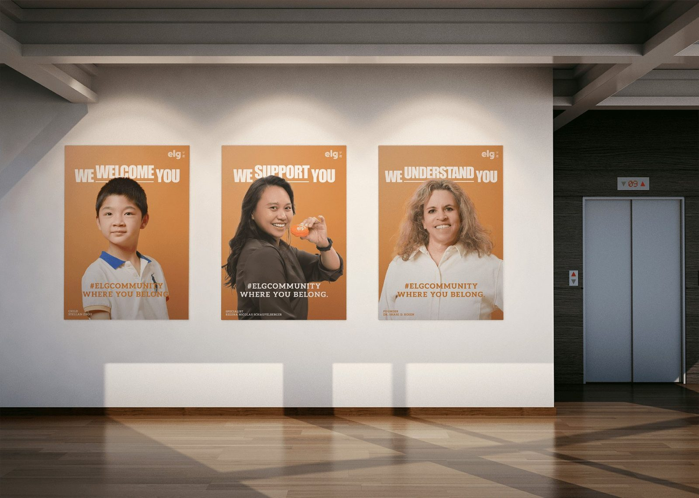
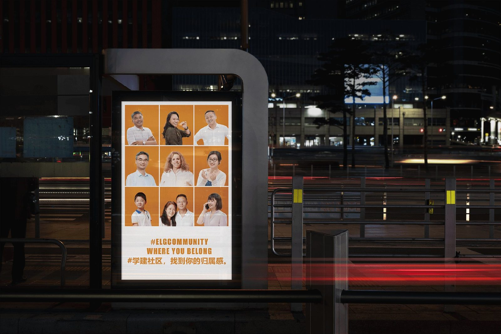
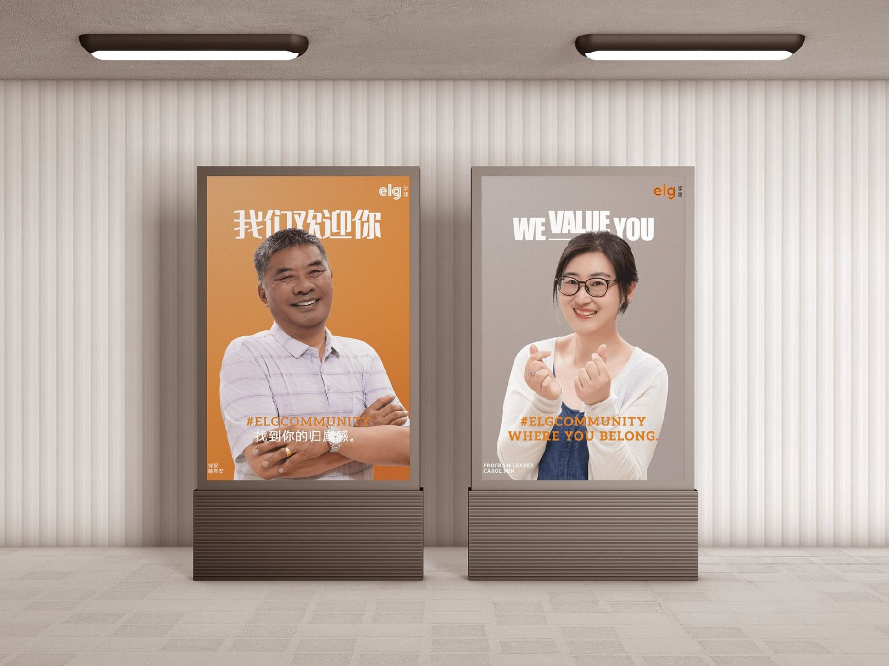
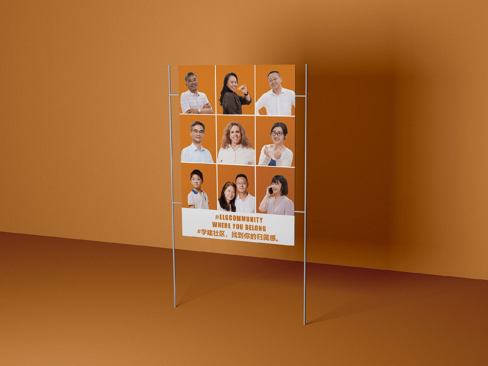
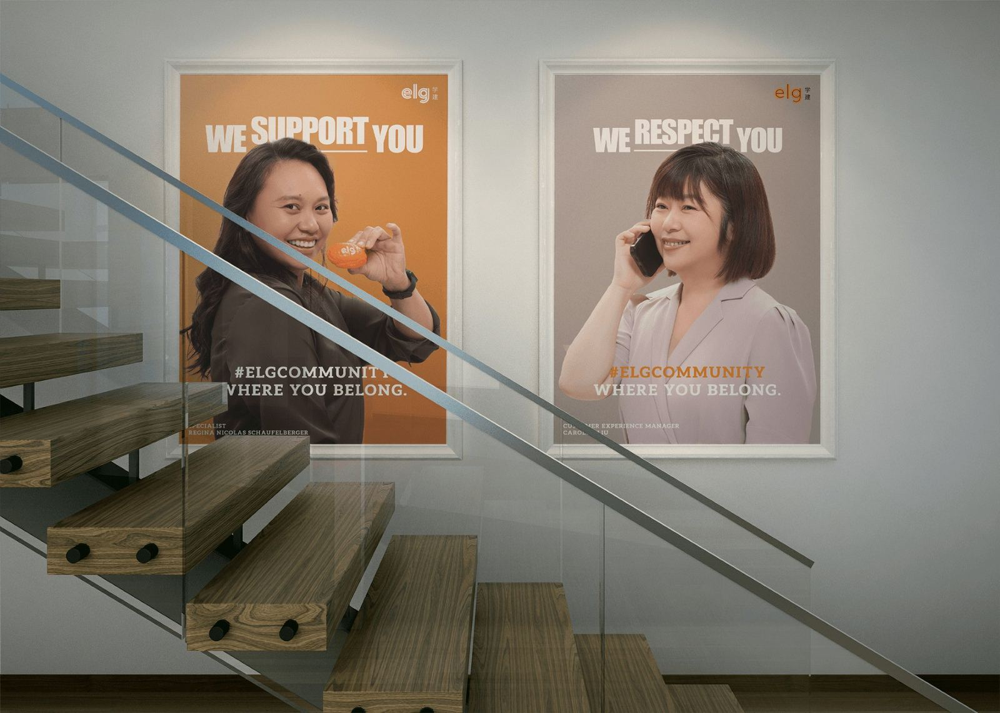
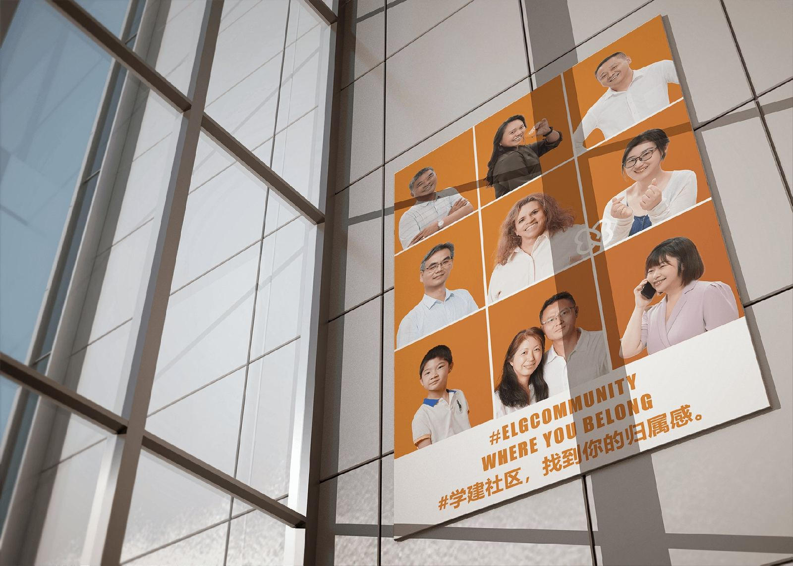

Education · Brand Content
Learning
With Compassion
ELG focuses on fostering educational growth and supporting children with special needs through community initiatives.

ELG
Education · Brand Content
- Brand Videos
- Community Campaign
Brand Content. Community Engaging.
Goal
ELG needed a brand identity that clearly communicates its mission to support children with special educational needs.
Solution
We crafted a brand identity that resonates with ELG's mission by producing engaging videos and a strategic community campaign. These elements were designed to visually and emotionally connect with the audience, highlighting ELG's commitment to supporting children with diverse learning abilities.
What we delivered.
Brand Videos
Created engaging videos to illustrate ELG's philosophy and parental support.
Community Campaign
Developed campaigns featuring photoshoots to connect with families.

The work





Where it landed
The branding solidified ELG's position in the educational sector, effectively communicating their commitment to individualized learning.
Have a similar business problem?
Bring us the problem.
You do not need to know which service you need. Start with the problem, or run the free audit and let the evidence choose the next step.